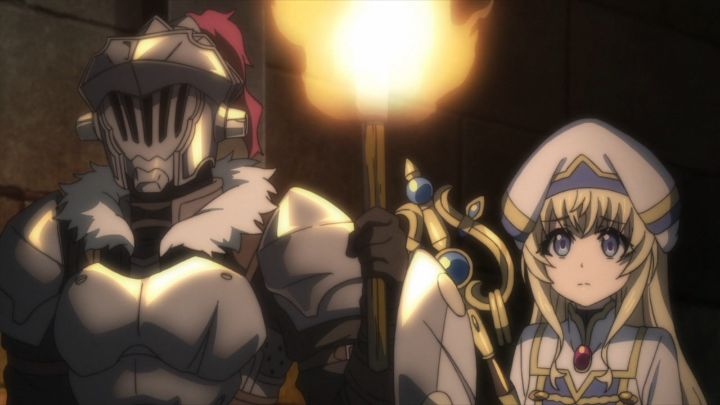

"Goblin Slayer" was one of the more popular anime from 2018, but my impression is that praise for the show is more common in Japan than it would be in America. In the US, the series is defined by how controversally violent the content is. Despite that, curiosity got the better of me, and I did get around to watching the show for myself. I regret it.Another "fantasy-video-game-but-real" anime, the story is set in a medival world where adventurers take quests to earn their living. The lead character and actor for the viewer's perspective, "Priestess," is a brand new adventurer and limited to basic magic and healing spells. On her first day, she's invited to join a group of other rookie adventurers, just when they need a healer on their mission to a goblin cave to save women they captured. The goblins are small, green, and stupid, and easy to kill individually. Despite the concerns of the quest manager's face, this should be an easy task, right?The mission goes awry quickly. In the dark cavern, the four are outnumbered, and the little goblins are able to defeat them fairly easily, despite losing a few of their own. Inspired just as much by dark fantasy as it is by video games, this isn't a case where characters can survive attacks or get an extra life to save themselves. Three of the group are butchered by the goblins, with extra attention to each grueling stab of the knife and their curdling screams, and the horror of a dozen of them attacking at once, pinning one down as they cut off their limbs with a dull blade. Two of the victims are girls, and aren't killed as quickly as the one man in the group: after a stab or two and taking away their weapons, the goblins tear off their clothes, pinning them face down as they violent rape them, cackling at their struggle to resist. This is implied and off-camera, of course, but is explicit enough to push what would be acceptable to show on broadcast television. The Priestess barely escapes alive, and before she's attacked herself halfway up the cave (peeing herself, the smell of which makes the goblins laugh more), she sees a mysterious figure, a lone knight: the self-named Goblin Slayer. He's cold, strategic and ruthless: he knows how to kill the goblins with the most certainty, using sword, fire, and any tricks he has to kill off the entire hoard, including some goblin babies hiding at the bottom. He has no pity for them, seeing them as an evil investation that needs to be dealt as an exterminator would with rats. The Priestess is able to help him finish the job, but despite saving the naked female victims at the bottom (traumatized and mute from their experience as "play-things"), she's horrified by the experience, both of the goblins and the Slayer. Apparently, this type of event is common in this world: rookie adventurers take on more than they can handle at an increasing population of goblins across the land, dying in the process, or quitting the job after what they've seen. But in rare cases, some adventurers continue on, and the Priestess picks herself up to continue her life, deciding to team up with the Slayer in his continued quests. This is horrific to read, and even more horrific to watch. The idea of fantasy monsters terrorizing and violently having sex with human girls is not new, but is usually saved for extremely depraved hardcore porn. Anime itself is not new to poor depictions and treatment of women, but even in the few cases where it goes way too far (towards but not reaching what I witnessed here), there's usually other merits to help recommend the series regardless, be it good direction, world-building, or exciting action. "Goblin Slayer" is simply too dark and gross to overcome any of this (in the second episode, we watch the calm morning of a character simply known as "Cow Girl" waking up buck naked: through both violence, comedy and fanservice, I've never seen women treated so poorly in a show). If any of this gives you pause for even a moment, you would be wise in skipping the series entirely. But is there any merit to consider?The Goblin Slayer, always masked, is single-minded, much to the teasing of other adventurers: he only hunts goblins, regardless of pay or ease (but from the volume of quests he takes, the pay is good). He has reason behind his motives. An early episode explains the story: goblins attacked his home village when he was young, and he hid under the floorboards to survive as an older female friend was raped and killed above him. The traumatic experience drove him "mad" and "dangerous," as the few remaining friends he has from that village describe him. Nonetheless, he's steadfast in his personal mission of revenge to hunt as many goblins as he can, with the task of saving victims involved as a secondary goal. There isn't much mystery left to him, but it is intriguing to see a character so focused on his purpose, and to see how he carries himself in each dungeon he finds. Despite some clear laziness in the story (none of the characters have real names on the Wikipedia page), there are hints of an interesting world. There's a lot more than just goblins, and there's a hierarchy of society among the other experienced adventurers. The side characters, whether they appear briefly or for a couple episodes, having interesting backgrounds of their own. There's even some moments that address the trauma that surviving women have, and how they successfully or unsuccessfully overcome it to move on. By the final episodes, the lead hero shows some depth and growth beyond his one-track mind. Dare I say it... the writing is good at times! There is an intriguing beauty to the complexity of the world, and the subtlety of how such world-building is conveyed.... but the show isn't here for that, it's here to kill goblins. It's a little frustrating that the story has so little ambition beyond this, especially over the first few episodes, as if the background elements were just decoration for a tabletop RPG campaign. And despite the extremely dark content driving the purpose, "Goblin Slayer" still wants to follow the standard design of other mainstream anime, with common looking anime designs (something more like "Hellsing Ultimate" would have ensured the appropriate audience comes to watch), women with big boobs, and attempts at humor in quieter moments. The Slayer even ends up with a harem-of-sorts, the obligitory trope where virtually all female characters in the show what to romance the lead, even if other characters out him for being a loser... kind of in bad taste given the horror women go through in this story. Maybe 30 minutes of the show could have been edited out, and we'd be left with a perfectly normal fantasy anime that young teenagers could watch, but still with depth to the world left in tact. But that content is completely at odds with the darker content, leaving me baffled to justify much reason to recommend the show, and not knowing who to recommend it to. The character designs and backgrounds are fairly basic, with only the Slayer himself and his iconic design standing out at all. Animation is also standard for broadcast anime, with excessive use of CGI for the Slayer and his armor. The impression is that the studio didn't need to try hard on this show, as the story's content was all people came for. But as previously stated, the design just doesn't make sense for the brutal elements. The rock music is fine and fitting to the dark violence (I did like the English-lyric-sung opening theme well enough), and the English dub is adequete. Rare for me, I actually preferred the more stoic delivery of the Japanese acting, and it's worth noting the dub has characters referring to each other using nicknames, opposed to the official "non-names" from the source material.There's a place for adult dark-fantasy in anime, but there are better stories to watch ('Berserk" or "Attack on Titan" come to mind) if you crave action and horror. Maybe "Afro Samurai" or "Hellsing Ultimate" if you want something edgier in its violence. Sexual violence is rarely justified in stories, and it's typically better to not include it at all... while it's an important part of the motivations behind characters in "Goblin Slayer," that doesn't make it easier, or acceptable, to witness. The sad thing is, there are some merits to the show, such that if the controversal elements were left out, we'd have a servicable, if pedestrian, action fantasy series with hints of compelling drama. With some editing and better production quality, it could have been a unique standout. Of course, it's that controversy that drew such curiosity and discussion to the show in the first place, and it worked on me... but I hope this trend doesn't become widespread. ... on the other hand, "Goblin Slayer" could be viewed as a commentary on the fantasy genre and video-game violence we've grown so accustomed to, with a little extra context. I'll never look at "Dragon Quest" or "Final Fantasy" the same way again.
- "Ani" More reviews can be found at : https://2danicritic.github.io/ Previous review: review_Go_West_-_A_Lucky_Luke_Adventure Next review: review_Good_Luck_Girl!